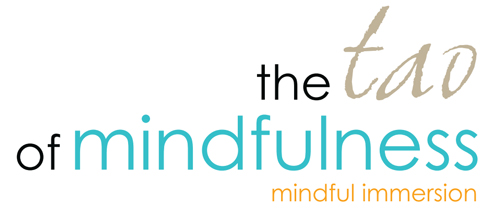
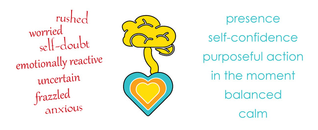
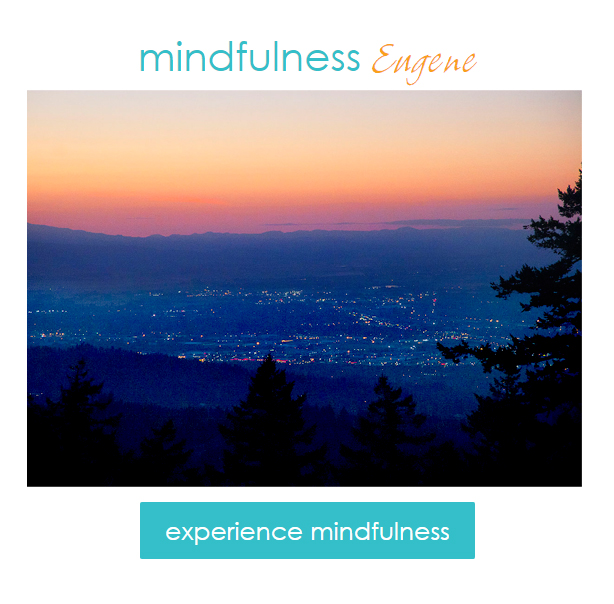

Attending one of our workshops is like LASIK for your mental clarity. Become more productive. Stress less. Enjoy Life!

Saturday, April 8, 2017
10 AM - 4 PM
Eugene, Oregon |
Early Bird pricing:
$150/person
$125/person (bring a friend discount)
$179 after March 25 |
What can I achieve?

 |
"Mindfulness is the awareness that arises from paying attention to the present moment: on purpose, through your five senses, and non-judgmentally."
Jon Kabat-Zinn
Coming to Our Senses
Before it's Too Late |
It's not a "Workshop"
Mindfulness. In a mindful environment.
How is this unique?
Environment
I recently attended a workshop from 9 AM - 9 PM Friday, Saturday and Sunday, under flourescent lights in a hotel meeting room. Great information, but I got brain-overload syndrome!
The Tao of Mindfulness places an emphasis on a mindfully cultivated, nurturing, tranquil environment.
No Hotels or Fluorescent Lights
We've found that majority of workshops take place in hotel meeting rooms, under fluorescent lights. Personally, fluorescent lights and stale indoor air makes me claustrophobic, anxious, and overwhelmed.
When we're immersed in a nurturing environment with peer support, positivity, and are actively encouraged, we'ree much more likely to succeed at developing new, more useful habits
The Tao of Mindfulness is a fulfilling day,
but not too long, from 10 AM - 4 PM
And we prepare a delicious lunch together, mindfully, patiently. No rushing around.
No adrenalin rush & crash
Many times that "If you can dream it, you can achieve it" mindset from workshops
evaporates as soon as you're stuck in Monday Morning traffic the morning after.
The Tao of Mindfulness is gentle
A relaxing Saturday. (You might feel like you're on vacation.)
Peace, calm, connection, good people, good conversation.
It's kind of like a feel-good movie. But in real life.
Hosted in Nature
At a location just minutes outside of Eugene.
Includes a mindful guided walking meditation.
Ready to experience mindfulness?
Click the Sunset from Spenser's Butte to Register:
|
|
It's not a "Workshop"
Mindfulness.
In a mindful environment.
Schedule
Morning Sessionon
- Opening Tea Ceremony & communt-"tea"
- Ice Breaker
- Morning Class
outdoors, unless
inclement weather
Lunch Hour & Siestata
- Meal Preparation together
- Eating together
- Meditation siesta
Afternoon Session
- Afternoon Class
outdoors, unless
inclement weather
- Guided Walking Mediation
outdoors, bring a light rain jacket
- Final Discussion
thoughts, feelings, emotions about your experiences today
About Your Guides
Tom Tortorich &
Micayla Harland >
Download
Print Brochure PDF>
Is The Tao of
Mindfuless for me?
- Are you a "Type B" personality? Don't like to rush? Want to learn to enjoy peace & calm (or do already.)
- Do you want to learn to slow down?
- Are you a Highly Sensitive Person, sensitive to chemical products, perfumes, flourescent lights, etc?
- Are you interested in Learning how to slow down, be mindful, and cultivate useful habits?
- It's also for people who have completed the cycle of healing that we all have been going through.
- Are you ready for the next step that begins when self-healing is completed?
- (Yes! The hampster wheel of healing has an end!)
Register Now
Experience Mindfulness >
Set and Setting
Timothy Leary popularized the phrase in the context of psychedelic experiences: one's mindset (shortened to 'set') and the physical and social environment (the setting) in which the user has the experience.
Set and Setting have a much broader context than psychedelics.
When looking to learn new skills, or create new, more beneficial habits, set and setting are crucial to successfully created new habits. When we're immersed in a nurturing environment with peer support, positivity, and are actively encouraged, we are much more likely to succeed at developing new, more useful habits and "changing our minds."
We've developed the content for The Tao of Mindfulness with the specific, mindful intention to create a gentle, relaxing, peaceful experience. We emphasize a nurturing environment. Only when we're relaxed, peaceful, joyful and in a nutrutring, empathetic environment do we really have the greatest potential to learn new skills.
Join us!
Saturday, April 8
for a relaxing, educational event
10 AM - 4 PM
Register Now
Experience Mindfulness >
|